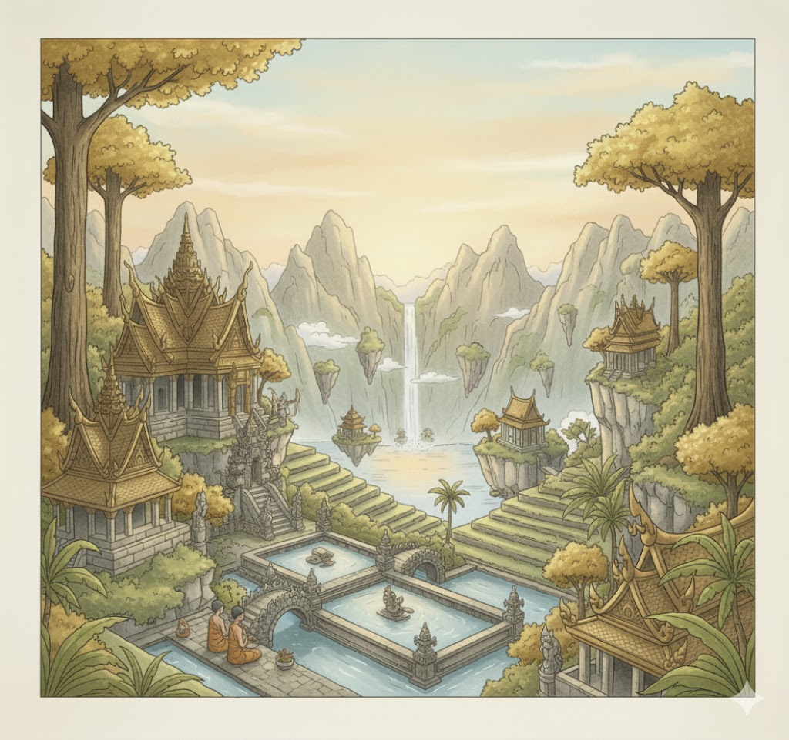

Legenda Kebo Emas & Bapa Tuo

Dahulu kala, wilayah yang kini dikenal sebagai Kebomas masih berupa hutan lebat dan rawa-rawa. Di daerah itu tinggal seorang tokoh bijaksana bernama Bapa Tuo, seorang sesepuh yang dihormati karena kemampuannya menjaga keseimbangan antara manusia dan alam. Warga sekitar sering meminta nasihat kepadanya, terutama jika terjadi hal-hal aneh di desa.
Pada suatu hari, muncul sesosok makhluk yang belum pernah terlihat sebelumnya— seekor Kebo Emas, kerbau besar berkulit keemasan yang bersinar ketika terkena cahaya matahari. Makhluk itu dipercaya sebagai jelmaan penjaga tanah tua yang sedang murka. Dalam kemarahannya, Kebo Emas merusak ladang, menghancurkan pagar-pagar bambu, dan membuat warga ketakutan.
Bapa Tuo menyadari bahwa kedatangan Kebo Emas bukan sekadar gangguan biasa. Ia mendekati makhluk itu dengan hati-hati, mencoba menenangkannya. Namun, Kebo Emas semakin mengamuk, sehingga terjadilah pertempuran besar antara keduanya. Suara hentakan kaki kerbau itu menggema ke seluruh lembah, sementara Bapa Tuo menggunakan kesaktian dan ketenangannya untuk menghadapi serangan demi serangan.
Kehidupan di Kebomas Dahulu
Pada masa itu, masyarakat hidup sangat bergantung pada alam. Mereka percaya bahwa setiap tempat memiliki penjaga gaib. Bapa Tuo adalah sosok yang mampu berkomunikasi dengan alam, menjaga hubungan manusia dengan roh penunggu wilayah Kebomas.
Kemunculan Kebo Emas
Kemarahan Kebo Emas dipahami sebagai tanda bahwa manusia mulai melupakan keseimbangan. Makhluk itu menghancurkan ladang warga, membuat panik seluruh desa. Banyak yang menganggap kedatangannya sebagai peringatan sekaligus ujian.
Pertarungan & Asal Nama Kebomas
Pertarungan panjang terjadi hingga matahari terbenam. Bapa Tuo akhirnya menaklukkan Kebo Emas, dan makhluk itu menghilang ke sebuah bukit. Cahaya emas terakhir yang terpancar membuat warga menamai lokasi itu “Kebo-mas”. Lama-kelamaan penyebutan itu berubah menjadi Kebomas, nama yang digunakan hingga sekarang.
Kolom Komentar
Tinggalkan Komentar
Komentar Pembaca
Pengunjung 1
Desainnya keren banget! Nuansa Nusantaranya dapet!
Pengunjung 2
Suka sama layoutnya! Clean dan nyaman dilihat.
Pengunjung 3
Tambah artikel lain tentang budaya dong!